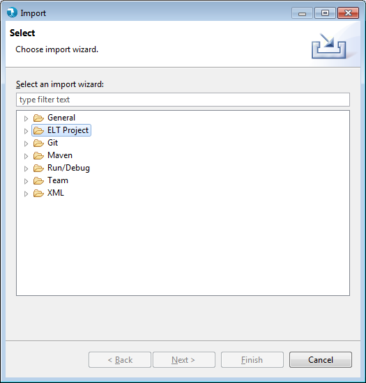
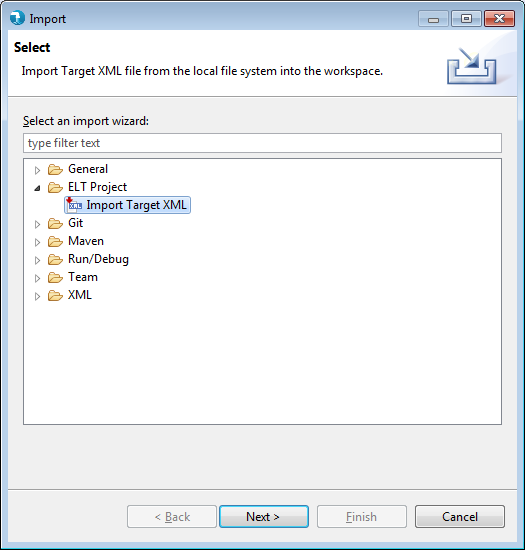
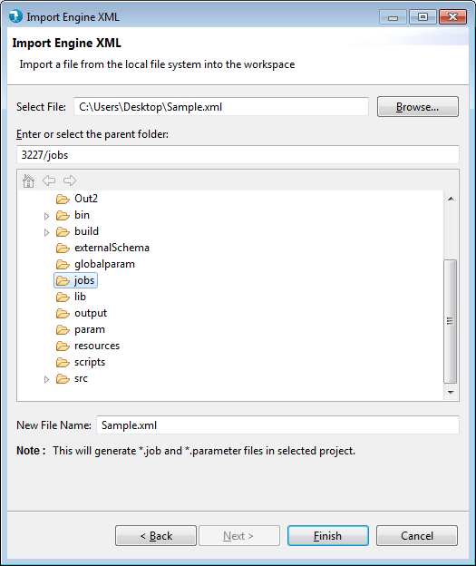
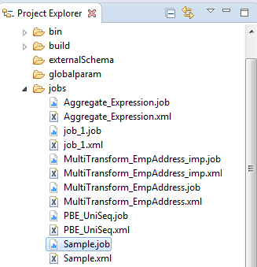
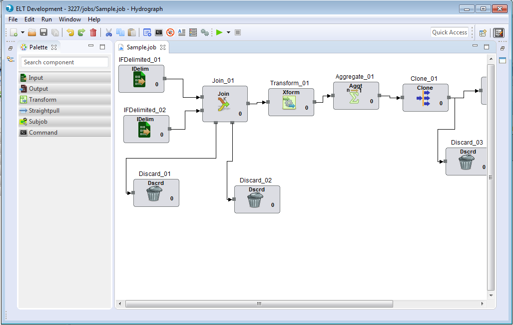

Hydrograph Help
Hydrograph Help
How to Import Engine XML to UI
Hydrograph Release Version 1.0
To import an Engine XML to the Hydrograph UI, existence of atleast one project is mandatory. Users can Import the engine XML by Right Click -> Project Explorer -> Import -> ELT Project -> Import Engine Xml in Hydrograph.



On Next -> Browse to select a valid XML file -> Select jobs folder in the existing project -> Provide a file name if the a file with same name already exists in your project -> click Finish

The XML is imported into the project explorer. A .job file is also created along with the imported XML file.

On opening the job file, UI for the XML gets displayed on the job canvas.
